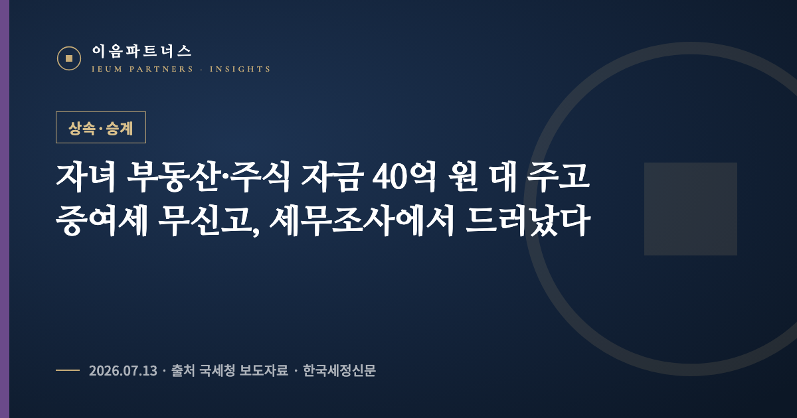

자녀 부동산·주식 자금 40억 원 대 주고 증여세 무신고, 세무조사에서 드러났다

국세청이 수입 원두값 상승을 이유로 커피 가격을 올린 한 유명 커피 프랜차이즈를 조사해 보니, 사주 자녀가 사주에게서 부동산·주식 취득자금 약 40억 원을 받고도 증여세를 신고하지 않았습니다. 국세청은 사주 일가에 가공급여 등으로 20억 원가량이 빠져나간 사실 등을 함께 확인해 이 업체에서 약 40억 원을 추징했다고 2026년 7월 밝혔습니다(국세청 보도자료). 대표님 댁에서도 자녀가 집이나 주식을 살 때 대표님 돈이 들어간 적이 있지 않으신가요? 이 글에서는 이 사례에서 드러난 문제와 미리 확인할 것을 정리합니다.
국세청은 앞으로도 경제여건을 핑계로 가격을 과도하게 올리면서 세금을 탈루한 것으로 확인된 업체는 즉시 조사대상으로 선정하고, 금융계좌 추적 등 가능한 모든 수단을 동원하겠다고 밝혔습니다. 가족 사이의 자금 이동은 세무조사에서 함께 드러날 수 있으니, 문제가 되기 전에 정리해 두시길 권합니다. 어디서부터 볼지 막막하시다면 카카오톡 채널 이음파트너스로 편하게 물어 주세요.
무슨 일이 있었나
국세청은 고물가를 틈타 가격을 지나치게 올리고 소득은 제대로 신고하지 않은 혐의가 있는 업체 117곳을 2025년 9월부터 2026년 2월까지 네 차례에 걸쳐 조사했습니다. 2026년 6월까지 114곳의 조사를 마쳐 모두 3,195억 원을 추징했고, 범칙처분은 33건(고발 13건)이었습니다(한국세정신문). 커피 프랜차이즈는 이 가운데 서민 물가 부담을 키운 사례로 소개됐습니다.
| 구분 | 내용 |
|---|---|
| 전체 조사 | 117개 업체(2026년 6월까지 114개 종결) |
| 전체 추징 | 3,195억 원, 범칙처분 33건(고발 13건) |
| 이 업체의 자금 유출 | 사주 일가에 가공급여 등으로 20억 원가량 |
| 자녀 자금 지원 | 부동산·주식 취득자금 약 40억 원, 증여세 무신고 |
| 이 업체 추징액 | 약 40억 원(위 내용 등을 합친 금액, 항목별 금액은 공개되지 않음) |
여기서 추징액 약 40억 원은 증여세만의 금액이 아닙니다. 국세청은 자녀가 “증여세를 무신고한 사실 등이 확인되어 약 40억 원을 추징하였다”고 적었을 뿐, 가공급여와 증여세 등 항목별 금액은 밝히지 않았습니다(국세청 보도자료).
어디가 문제가 됐을까
① 자녀의 부동산·주식 자금을 부모가 댄 경우
자녀가 부모에게서 받은 돈으로 부동산이나 주식을 샀다면 그 돈은 증여(대가 없이 재산을 넘겨주는 것)로 볼 수 있고, 증여세 신고가 필요할 수 있습니다. 이 사례에서는 약 40억 원을 받고도 신고하지 않은 사실이 회사 세무조사 과정에서 함께 확인됐습니다.
② 일하지 않은 가족에게 나간 급여
가공급여(실제로 일하지 않은 사람에게 급여 명목으로 준 돈)도 문제가 됐습니다. 같은 발표에 나온 한 상조업체 사례에서도 실제 근무하지 않은 사주 자녀와 가사도우미에게 인건비 명목으로 10여억 원을 지급한 사실이 확인돼, 다른 항목과 함께 약 50억 원이 추징됐습니다.
대표님이 지금 확인할 것
- 최근 자녀가 부동산이나 주식을 살 때 대표님이나 회사 돈이 들어갔는지, 들어갔다면 증여세 신고를 했는지
- 자녀에게 빌려준 돈이라면 빌려준 근거와 갚은 기록이 남아 있는지
- 회사에서 급여를 받는 가족이 실제로 근무하고 있고, 근무 기록이 남아 있는지
- 지난 자금 지원 가운데 신고가 빠진 것이 있다면 정리 방법을 세무사와 확인했는지
참고한 자료
- “물가불안 조장 탈세자” 세무조사 3,195억 원 추징 — 국세청 보도자료 (2026.07.13)
- 국세청, 물가불안 조장 탈세자에 3천억대 탈루세액 추징 — 한국세정신문 (2026.07.12)
가족에게 건넨 자금과 가족 급여를 함께 점검해 보고 싶으시다면 카카오톡 채널 이음파트너스로 편하게 물어 주세요.
※ 이 글은 일반적인 정보 제공을 위한 것으로, 개별 사안은 세무사·노무사 등 전문가와 함께 확인하시기 바랍니다.